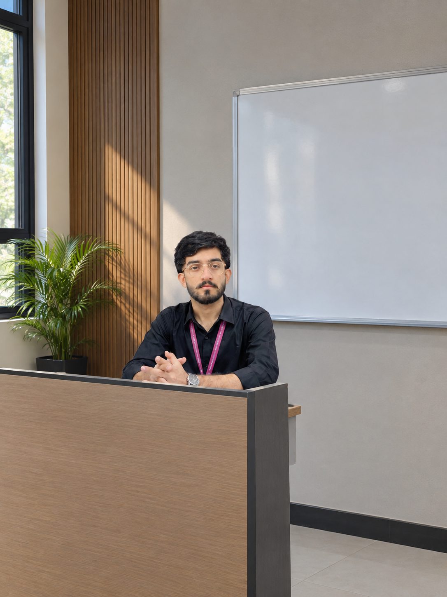

Computer Systems Engineer
Java & C++DeveloperJDBC & MySQLSpecialist
CreativityIs My Passion
I'm a Computer Systems Engineering student at Mehran University of Engineering & Technology (MUET), building practical software projects with Java, C++, JDBC, MySQL, OOP, GUI development, and Git/GitHub. I enjoy turning ideas into working applications and continuously improving my programming skills.
My Skills
Skills I've learned and developed through study, practice, and consistency.
I Made Incredible
Projects
Game Menu — Java Swing Application
Java, Swing, OOP, Event Handling
Student Management System
Java, JDBC, MySQL, OOP
Calculator — Java Application
Java, Swing, OOP
Experience
Computer Systems Engineering
Student
Mehran University of Engineering & Technology (MUET)
Developing programming and computer systems skills through university coursework and practical projects.
Java & C++
Developer
Personal & Academic Projects
Building practical applications such as a Java Game Menu, Calculator, and Student Management System using OOP, JDBC, MySQL, and Swing.
BS Computer Systems
Engineering
Mehran University of Engineering & Technology (MUET), Jamshoro
Computer Systems Engineering student, 2025 batch, currently in 2nd year.
Client Reviews
Ali Raza Sanghar
Great experience working with Farman. His database architecture is robust, and the REST APIs he developed for our platform are fast and highly secure.
Muhammad Azher
An exceptional software developer. He adheres to industry best practices, writes clean migrations, and delivers milestones before the deadline. Highly recommended!
Fardeen
Farman built a highly secure and scalable API architecture for our application. His Java, JDBC, MySQL, and OOP skills were a strong fit for our practical software project.
Sir Kashan
An exceptional developer who displays a deep understanding of backend systems. Farman is skilled in database normalization and REST API integrations, always writing code that is clean, secure, and highly optimized.
Ali Raza Sanghar
Great experience working with Farman. His database architecture is robust, and the REST APIs he developed for our platform are fast and highly secure.
Muhammad Azher
An exceptional software developer. He adheres to industry best practices, writes clean migrations, and delivers milestones before the deadline. Highly recommended!
LET'S CONNECT
Open to learning, projects & opportunities.
Let's Collaborate
Ready to start a project or build something incredible together? Drop a message!